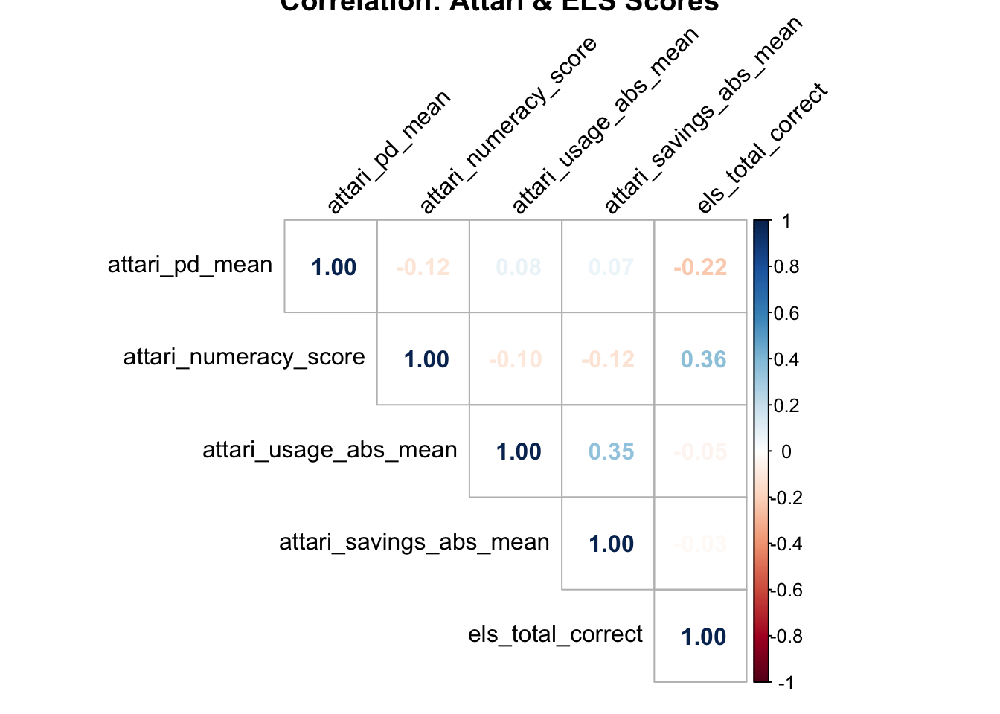

score_attari_part1<-function(df, id_col="id"){# 1) Perceived Difficulty (ATT01–ATT15)diff_items<-c(paste0("ATT", sprintf("%02d", 1:15)))# Recode "9" (Not applicable) to NA; then compute a meandf_pd<-df%>%mutate(across(all_of(diff_items), ~ifelse(.==9, NA, .)))%>%# Summarize at participant-level:rowwise()%>%mutate( attari_pd_mean =mean(c_across(all_of(diff_items)), na.rm =TRUE), attari_pd_n =sum(!is.na(c_across(all_of(diff_items)))))%>%ungroup()%>%select(all_of(id_col), attari_pd_mean, attari_pd_n)# 2) Numeracy Items (ATT16–ATT18)# Example: # ATT16 correct if response == 500# ATT17 correct if response == 10# ATT18 correct if response == 0.1 (adjust if needed)num_items<-c("ATT16", "ATT17", "ATT18")df_num<-df%>%mutate( ATT16_correct =ifelse(ATT16==500, 1, 0), ATT17_correct =ifelse(ATT17==10, 1, 0), ATT18_correct =ifelse(ATT18==0.1, 1, 0), attari_numeracy_score =ATT16_correct+ATT17_correct+ATT18_correct)%>%select(all_of(id_col), attari_numeracy_score)# Join the perceived difficulty and numeracy scoresout<-df_pd%>%left_join(df_num, by =id_col)return(out)}score_attari_part2<-function(df, id_col="id"){usage_items<-c("ATT19","ATT20","ATT21","ATT22","ATT23","ATT24","ATT25","ATT26","ATT27")savings_items<-c("ATT28","ATT29","ATT30","ATT31","ATT32","ATT33")usage_key<-c( ATT19 =27, # example correct value ATT20 =140, ATT21 =48, ATT22 =128, ATT23 =3400, ATT24 =925, ATT25 =1000, ATT26 =3500, ATT27 =3400)savings_key<-c( ATT28 =1800, ATT29 =25, ATT30 =3400, ATT31 =115, ATT32 =546, ATT33 =4000)all_keys<-c(usage_key, savings_key)# Create absolute and relative error columnsdf_scored<-df%>%mutate(across( .cols =names(all_keys), .fns =list( abs_error =~abs(.-all_keys[cur_column()]), rel_error =~ifelse(all_keys[cur_column()]==0,NA_real_, 100*(.-all_keys[cur_column()])/all_keys[cur_column()])), .names ="{.col}_{.fn}"))# Summarize errors at participant level# For example: mean absolute error across usage items, mean absolute error across savings items, etc.df_summary<-df_scored%>%rowwise()%>%mutate( attari_usage_abs_mean =mean(c_across(ends_with("_abs_error")&all_of(paste0(usage_items, "_abs_error"))), na.rm =TRUE), attari_usage_rel_mean =mean(c_across(ends_with("_rel_error")&all_of(paste0(usage_items, "_rel_error"))), na.rm =TRUE), attari_savings_abs_mean =mean(c_across(ends_with("_abs_error")&all_of(paste0(savings_items, "_abs_error"))), na.rm =TRUE), attari_savings_rel_mean =mean(c_across(ends_with("_rel_error")&all_of(paste0(savings_items, "_rel_error"))), na.rm =TRUE))%>%ungroup()%>%select(all_of(id_col),attari_usage_abs_mean, attari_usage_rel_mean,attari_savings_abs_mean, attari_savings_rel_mean)return(df_summary)}score_els<-function(df, id_col="id"){# If your data is in WIDE format: ELS01, ELS02, ..., ELS08# define correct answers:correct_answers<-c( ELS01 =2, ELS02 =3, ELS03 =3, ELS04 =3, ELS05 =3, ELS06 =2, ELS07 =3, ELS08 =1)# Create indicator of correctness for each itemdf_scored<-df%>%mutate( ELS01_correct =ifelse(ELS01==correct_answers["ELS01"], 1, 0), ELS02_correct =ifelse(ELS02==correct_answers["ELS02"], 1, 0), ELS03_correct =ifelse(ELS03==correct_answers["ELS03"], 1, 0), ELS04_correct =ifelse(ELS04==correct_answers["ELS04"], 1, 0), ELS05_correct =ifelse(ELS05==correct_answers["ELS05"], 1, 0), ELS06_correct =ifelse(ELS06==correct_answers["ELS06"], 1, 0), ELS07_correct =ifelse(ELS07==correct_answers["ELS07"], 1, 0), ELS08_correct =ifelse(ELS08==correct_answers["ELS08"], 1, 0), els_total_correct =ELS01_correct+ELS02_correct+ELS03_correct+ELS04_correct+ELS05_correct+ELS06_correct+ELS07_correct+ELS08_correct)%>%select(all_of(id_col), els_total_correct)return(df_scored)}score_recs<-function(df, id_col="id"){# The user’s RECS items might be labeled or factor-coded. # Below we assume they've been converted to numeric or we do so inline.# We'll keep it simple and replicate your prior logic.df_out<-df%>%mutate(# Convert any labeled values to plain numeric if needed:# RECS13, RECS14, RECS15: portion of Inc/CFL/LED. portion_INC =case_when(RECS13==1~1.00, # "All" incandescentsRECS13==2~0.75,RECS13==3~0.50,RECS13==4~0.50,RECS13==5~0.25,RECS13==6~0.0,TRUE~NA_real_), portion_CFL =case_when(RECS14==1~0,RECS14==2~0.25,RECS14==3~0.50,RECS14==4~0.50,RECS14==5~0.75,RECS14==6~1.00,TRUE~NA_real_), portion_LED =case_when(RECS15==1~0,RECS15==2~0.25,RECS15==3~0.50,RECS15==4~0.50,RECS15==5~0.75,RECS15==6~1.00,TRUE~NA_real_),# A single "lighting_efficiency_score"# Weighted formula (for example): lighting_efficiency_score =(portion_LED+0.5*portion_CFL)-portion_INC)%>%mutate(# Score for heating control: (RECS02)# e.g., 3 if "program the thermostat," 2 if "manually adjust," 1 if "set one temp," # 0 if "turn on/off," "other," or "don’t use." heat_control_score =case_when(RECS02==3~3,RECS02==2~2,RECS02==1~1,RECS02%in%c(4,5,6,7)~0, # Adjust for your actual codingTRUE~NA_real_),# Score for central AC control: (RECS04) ac_control_score =case_when(RECS04==3~3,RECS04==2~2,RECS04==1~1,RECS04%in%c(4,5,6,7)~0, TRUE~NA_real_),# Score for individual AC control: (RECS06 + RECS09) ind_ac_control_score =case_when(RECS06==1&RECS09==3~3, # programRECS06==1&RECS09==2~2, # manuallyRECS06==1&RECS09==1~1, # set one tempRECS06==1&RECS09%in%c(4,5,6,7)~0,TRUE~0# If no individual AC), hvac_control_score =heat_control_score+ac_control_score+ind_ac_control_score)%>%# Finally select only the id col + new summary columns select(all_of(id_col),lighting_efficiency_score,hvac_control_score,RECS07# Maybe also keep the count of window AC units)return(df_out)}score_nep<-function(df, id_col="id"){# We assume NEP01–NEP15 each coded 1=Strongly Agree to 5=Strongly Disagree.# Identify which items need reversing. This is a standard set for the NEP scale,# but confirm which items are “pro” vs “anti” NEP in your data.# Example: Suppose NEP01, NEP06, NEP07, NEP10, NEP11, NEP14, NEP15 are “pro-NEP,” # and the rest are “anti-NEP.” Adjust as needed.pro_nep_items<-c("NEP01", "NEP06", "NEP07", "NEP10", "NEP11", "NEP14", "NEP15")anti_nep_items<-setdiff(paste0("NEP", sprintf("%02d", 1:15)), pro_nep_items)# Reverse scoring function for "anti-NEP" items:# If scale is 1–5, reversed_score = 6 - raw_score# That way 1(StrongAgree) -> 5, 5(StrongDisagree) -> 1, etc.df_out<-df%>%mutate(across(all_of(anti_nep_items), ~6-.x))%>%# Now everything is in the same direction: higher = more ecocentric.rowwise()%>%mutate( nep_mean =mean(c_across(starts_with("NEP")), na.rm =TRUE), nep_sum =sum(c_across(starts_with("NEP")), na.rm =TRUE), nep_n =sum(!is.na(c_across(starts_with("NEP")))))%>%ungroup()%>%select(all_of(id_col), nep_mean, nep_sum, nep_n)return(df_out)}score_rs<-function(df, id_col="id"){# Reverse-coded items:# If original scale is 1=Agree to 5=Disagree, # reversed = 6 - originaldf_rev<-df%>%mutate( RS01_r =6-RS01, # "I generally don’t pay attention to how much energy I use." RS03_r =6-RS03# "I think saving energy is largely a waste of time."# If RS06 is also reverse-coded in your real data, handle that too.)%>%rowwise()%>%mutate(# Combine the environment items (RS01_r, RS02, RS03_r, RS06) for a "pro-env" measure rs_env_mean =mean(c(RS01_r, RS02, RS03_r, RS06), na.rm =TRUE), rs_env_n =sum(!is.na(c(RS01_r, RS02, RS03_r, RS06))))%>%ungroup()%>%select(all_of(id_col), rs_env_mean, rs_env_n, RS04, RS05)return(df_rev)}score_langevin_part1<-function(df, id_col="id"){# Example: Suppose LAN04 (4-pt scale) and LAN05 (6-pt scale) measure “audit status” and “audit effectiveness.”# We just create a single numeric or do them separately.df_out<-df%>%mutate(# For instance, treat LAN04 as is (1–4),# LAN05 as is (1–6). Possibly you need to reverse or transform them.# We'll just keep them.# ...# Or create an example combined measure:# "audit_index" = LAN04 + (LAN05/6 * 4) (put them on roughly same scale) audit_index =LAN04+(LAN05/6*4))%>%select(all_of(id_col), audit_index, LAN04, LAN05, LAN06, LAN07, LAN08, LAN09)return(df_out)}score_langevin_part2<-function(df, id_col="id"){# Example: Summarize the difference between LAN10 (winter temp) and LAN12 (summer temp)# or create a "comfort_stability_score" from LAN14, LAN15, etc.df_out<-df%>%mutate(# Example placeholders: seasonal_diff =LAN10-LAN12, comfort_score =LAN14+LAN15# or some other approach)%>%select(all_of(id_col), seasonal_diff, comfort_score, LAN10, LAN11, LAN12, LAN13, LAN14, LAN15)return(df_out)}lss_part1_scores<-score_langevin_part1(lss1, id_col ="id")lss_part2_scores<-score_langevin_part2(lss2, id_col ="id")nep_scores<-score_nep(nep, id_col ="id")head(nep_scores)
recs_scores<-score_recs(recs, id_col ="id")# 1) Attari Part 1 scoresattari1_scores<-score_attari_part1(aes_combined, id_col ="id")# 2) Attari Part 2 scoresattari2_scores<-score_attari_part2(att2_combined, id_col ="id")# 3) Energy Literacy Survey scoresels_scores<-score_els(els, id_col ="id")# or whichever final wide ELS object you havescores_all<-attari1_scores%>%left_join(attari2_scores, by ="id")%>%left_join(els_scores, by ="id")head(scores_all)
scores_all2<-scores_all%>%left_join(recs_scores, by ="id")%>%left_join(nep_scores, by ="id")%>%left_join(rs_scores, by ="id")%>%left_join(lss_part1_scores, by ="id")%>%left_join(lss_part2_scores, by ="id")library(haven)# for zap_labelslibrary(readr)# for parse_number# 1) Remove the 'label' attributesscores_all2<-zap_labels(scores_all2)scores_all2<-scores_all2%>%mutate( RECS07 =parse_number(RECS07), # "2 [some text]" -> numeric 2 RS04 =as.numeric(RS04), # had <dbl+lbl> RS05 =as.numeric(RS05), LAN04 =as.numeric(LAN04), LAN05 =as.numeric(LAN05), LAN06 =as.numeric(LAN06), LAN07 =as.numeric(LAN07), LAN08 =as.numeric(LAN08), LAN09 =as.numeric(LAN09), LAN14 =as.numeric(LAN14), LAN15 =as.numeric(LAN15))
Warning: There was 1 warning in `mutate()`.
ℹ In argument: `RECS07 = parse_number(RECS07)`.
Caused by warning:
! 4 parsing failures.
row col expected actual
11 -- a number na
26 -- a number N/A
71 -- a number N/A
141 -- a number n/a
Display code
vars_for_corr<-scores_all2%>%select(# Attariattari_pd_mean,attari_numeracy_score,attari_usage_abs_mean,attari_savings_abs_mean,# ELSels_total_correct,# RECSlighting_efficiency_score,hvac_control_score,RECS07, # now numeric# NEPnep_mean,# RSrs_env_mean,# LSS exampleaudit_index,seasonal_diff,comfort_score)#-------# Example: select some numeric columnsvars_for_correlation<-scores_all%>%select(attari_pd_mean,attari_numeracy_score,attari_usage_abs_mean,attari_savings_abs_mean,els_total_correct)cor_mat<-cor(vars_for_correlation, use ="pairwise.complete.obs")# Quick correlation tableprint(cor_mat)
# Optional: visualize with corrplotcorrplot::corrplot(cor_mat, method ="number", type ="upper", tl.col ="black", tl.srt =45, main ="Correlation: Attari & ELS Scores")

Display code
# Optional: visualize with corrplotcorrplot::corrplot(cor_mat, method ="number", type ="upper", tl.col ="black", tl.srt =45, main ="Correlation: Attari & ELS Scores")model_1<-lm(els_total_correct~attari_pd_mean+attari_numeracy_score, data =scores_all)summary(model_1)
Call:
lm(formula = els_total_correct ~ attari_pd_mean + attari_numeracy_score,
data = scores_all)
Residuals:
Min 1Q Median 3Q Max
-5.628 -1.150 0.036 1.246 4.247
Coefficients:
Estimate Std. Error t value Pr(>|t|)
(Intercept) 4.4775 0.3109 14.40 < 0.0000000000000002 ***
attari_pd_mean -0.3021 0.0633 -4.77 0.0000023 ***
attari_numeracy_score 0.7362 0.0822 8.96 < 0.0000000000000002 ***
---
Signif. codes: 0 '***' 0.001 '**' 0.01 '*' 0.05 '.' 0.1 ' ' 1
Residual standard error: 1.7 on 583 degrees of freedom
Multiple R-squared: 0.164, Adjusted R-squared: 0.161
F-statistic: 57.3 on 2 and 583 DF, p-value: <0.0000000000000002
Display code
model_2<-lm(attari_usage_abs_mean~els_total_correct+attari_numeracy_score, data =scores_all)summary(model_2)
Call:
lm(formula = attari_usage_abs_mean ~ els_total_correct + attari_numeracy_score,
data = scores_all)
Residuals:
Min 1Q Median 3Q Max
-821 -65 4 35 12206
Coefficients:
Estimate Std. Error t value Pr(>|t|)
(Intercept) 1414.55 71.79 19.70 <0.0000000000000002 ***
els_total_correct -3.43 13.97 -0.25 0.806
attari_numeracy_score -68.66 30.11 -2.28 0.023 *
---
Signif. codes: 0 '***' 0.001 '**' 0.01 '*' 0.05 '.' 0.1 ' ' 1
Residual standard error: 589 on 583 degrees of freedom
Multiple R-squared: 0.0111, Adjusted R-squared: 0.00768
F-statistic: 3.26 on 2 and 583 DF, p-value: 0.039
Source Code
---title: Instrument Correlations---```{r}pacman::p_load(dplyr,purrr,tidyr,here, haven,tibble,ggplot2,ggh4x,lme4,knitr,gt,flextable,ggh4x,psych,corrplot)options(digits=2, scipen=999, dplyr.summarise.inform=FALSE)draw <-readRDS(here("data","draw.rds"))dinst <-readRDS(here("data","dinst.rds"))# Attari Energy Survey (Part 1)aes1 <- draw |>select(id,ATT01:ATT18)aes2 <- dinst |>select(id,ATT01:ATT18)aes_combined <-bind_rows(aes1, aes2)att_useSave <- draw |>select(id,ATT19:ATT33)att_useSave2 <- dinst |>select(id,ATT19:ATT33)att2_combined <-bind_rows(att_useSave, att_useSave2)els1 <- draw |>select(id,ELS01:ELS08)els2 <- dinst |>select(id,ELS01:ELS08)els <-bind_rows(els1,els2)recs1 <- draw |>select(id,RECS01:RECS16)recs2 <- dinst |>select(id,RECS01:RECS16)recs <-bind_rows(recs1,recs2)lss1_1 <- draw |>select(id,LAN01:LAN09)lss1_2 <- dinst |>select(id,LAN01:LAN09)lss1 <-bind_rows(lss1_1,lss1_2)lss2_1 <- draw |>select(id,LAN10:LAN87)lss2_2 <- dinst |>select(id,LAN10:LAN87)lss2 <-bind_rows(lss2_1,lss2_2)nep1 <- draw |>select(id,NEP01:NEP15)nep2 <- dinst |>select(id,NEP01:NEP15)nep <-bind_rows(nep1,nep2)demo1 <- draw |>select(id,DEM01:DEM30)demo2 <- dinst |>select(id,DEM01:DEM30)demo <-bind_rows(demo1,demo2)rs1 <- draw |>select(id,RS01:RS06)rs2 <- dinst |>select(id,RS01:RS06)rs <-bind_rows(rs1,rs2)```## o1```{r}score_attari_part1 <-function(df, id_col ="id") {# 1) Perceived Difficulty (ATT01–ATT15) diff_items <-c(paste0("ATT", sprintf("%02d", 1:15)))# Recode "9" (Not applicable) to NA; then compute a mean df_pd <- df %>%mutate(across(all_of(diff_items), ~ifelse(. ==9, NA, .))) %>%# Summarize at participant-level:rowwise() %>%mutate(attari_pd_mean =mean(c_across(all_of(diff_items)), na.rm =TRUE),attari_pd_n =sum(!is.na(c_across(all_of(diff_items)))) ) %>%ungroup() %>%select(all_of(id_col), attari_pd_mean, attari_pd_n)# 2) Numeracy Items (ATT16–ATT18)# Example: # ATT16 correct if response == 500# ATT17 correct if response == 10# ATT18 correct if response == 0.1 (adjust if needed) num_items <-c("ATT16", "ATT17", "ATT18") df_num <- df %>%mutate(ATT16_correct =ifelse(ATT16 ==500, 1, 0),ATT17_correct =ifelse(ATT17 ==10, 1, 0),ATT18_correct =ifelse(ATT18 ==0.1, 1, 0),attari_numeracy_score = ATT16_correct + ATT17_correct + ATT18_correct ) %>%select(all_of(id_col), attari_numeracy_score)# Join the perceived difficulty and numeracy scores out <- df_pd %>%left_join(df_num, by = id_col)return(out)}score_attari_part2 <-function(df, id_col ="id") { usage_items <-c("ATT19","ATT20","ATT21","ATT22","ATT23","ATT24","ATT25","ATT26","ATT27") savings_items <-c("ATT28","ATT29","ATT30","ATT31","ATT32","ATT33") usage_key <-c(ATT19 =27, # example correct valueATT20 =140, ATT21 =48, ATT22 =128, ATT23 =3400, ATT24 =925, ATT25 =1000, ATT26 =3500, ATT27 =3400 ) savings_key <-c(ATT28 =1800, ATT29 =25, ATT30 =3400, ATT31 =115, ATT32 =546, ATT33 =4000 ) all_keys <-c(usage_key, savings_key)# Create absolute and relative error columns df_scored <- df %>%mutate(across(.cols =names(all_keys),.fns =list(abs_error =~abs(. - all_keys[cur_column()]),rel_error =~ifelse( all_keys[cur_column()] ==0,NA_real_, 100* (. - all_keys[cur_column()]) / all_keys[cur_column()] ) ),.names ="{.col}_{.fn}" ))# Summarize errors at participant level# For example: mean absolute error across usage items, mean absolute error across savings items, etc. df_summary <- df_scored %>%rowwise() %>%mutate(attari_usage_abs_mean =mean(c_across(ends_with("_abs_error") &all_of(paste0(usage_items, "_abs_error"))), na.rm =TRUE),attari_usage_rel_mean =mean(c_across(ends_with("_rel_error") &all_of(paste0(usage_items, "_rel_error"))), na.rm =TRUE),attari_savings_abs_mean =mean(c_across(ends_with("_abs_error") &all_of(paste0(savings_items, "_abs_error"))), na.rm =TRUE),attari_savings_rel_mean =mean(c_across(ends_with("_rel_error") &all_of(paste0(savings_items, "_rel_error"))), na.rm =TRUE) ) %>%ungroup() %>%select(all_of(id_col), attari_usage_abs_mean, attari_usage_rel_mean, attari_savings_abs_mean, attari_savings_rel_mean)return(df_summary)}score_els <-function(df, id_col ="id") {# If your data is in WIDE format: ELS01, ELS02, ..., ELS08# define correct answers: correct_answers <-c(ELS01 =2,ELS02 =3,ELS03 =3,ELS04 =3,ELS05 =3,ELS06 =2,ELS07 =3,ELS08 =1 )# Create indicator of correctness for each item df_scored <- df %>%mutate(ELS01_correct =ifelse(ELS01 == correct_answers["ELS01"], 1, 0),ELS02_correct =ifelse(ELS02 == correct_answers["ELS02"], 1, 0),ELS03_correct =ifelse(ELS03 == correct_answers["ELS03"], 1, 0),ELS04_correct =ifelse(ELS04 == correct_answers["ELS04"], 1, 0),ELS05_correct =ifelse(ELS05 == correct_answers["ELS05"], 1, 0),ELS06_correct =ifelse(ELS06 == correct_answers["ELS06"], 1, 0),ELS07_correct =ifelse(ELS07 == correct_answers["ELS07"], 1, 0),ELS08_correct =ifelse(ELS08 == correct_answers["ELS08"], 1, 0),els_total_correct = ELS01_correct + ELS02_correct + ELS03_correct + ELS04_correct + ELS05_correct + ELS06_correct + ELS07_correct + ELS08_correct ) %>%select(all_of(id_col), els_total_correct)return(df_scored)}score_recs <-function(df, id_col ="id") {# The user’s RECS items might be labeled or factor-coded. # Below we assume they've been converted to numeric or we do so inline.# We'll keep it simple and replicate your prior logic. df_out <- df %>%mutate(# Convert any labeled values to plain numeric if needed:# RECS13, RECS14, RECS15: portion of Inc/CFL/LED.portion_INC =case_when( RECS13 ==1~1.00, # "All" incandescents RECS13 ==2~0.75, RECS13 ==3~0.50, RECS13 ==4~0.50, RECS13 ==5~0.25, RECS13 ==6~0.0,TRUE~NA_real_ ),portion_CFL =case_when( RECS14 ==1~0, RECS14 ==2~0.25, RECS14 ==3~0.50, RECS14 ==4~0.50, RECS14 ==5~0.75, RECS14 ==6~1.00,TRUE~NA_real_ ),portion_LED =case_when( RECS15 ==1~0, RECS15 ==2~0.25, RECS15 ==3~0.50, RECS15 ==4~0.50, RECS15 ==5~0.75, RECS15 ==6~1.00,TRUE~NA_real_ ),# A single "lighting_efficiency_score"# Weighted formula (for example):lighting_efficiency_score = (portion_LED +0.5* portion_CFL) - portion_INC ) %>%mutate(# Score for heating control: (RECS02)# e.g., 3 if "program the thermostat," 2 if "manually adjust," 1 if "set one temp," # 0 if "turn on/off," "other," or "don’t use." heat_control_score =case_when( RECS02 ==3~3, RECS02 ==2~2, RECS02 ==1~1, RECS02 %in%c(4,5,6,7) ~0, # Adjust for your actual codingTRUE~NA_real_ ),# Score for central AC control: (RECS04)ac_control_score =case_when( RECS04 ==3~3, RECS04 ==2~2, RECS04 ==1~1, RECS04 %in%c(4,5,6,7) ~0, TRUE~NA_real_ ),# Score for individual AC control: (RECS06 + RECS09)ind_ac_control_score =case_when( RECS06 ==1& RECS09 ==3~3, # program RECS06 ==1& RECS09 ==2~2, # manually RECS06 ==1& RECS09 ==1~1, # set one temp RECS06 ==1& RECS09 %in%c(4,5,6,7) ~0,TRUE~0# If no individual AC ),hvac_control_score = heat_control_score + ac_control_score + ind_ac_control_score ) %>%# Finally select only the id col + new summary columns select(all_of(id_col), lighting_efficiency_score, hvac_control_score, RECS07 # Maybe also keep the count of window AC units )return(df_out)}score_nep <-function(df, id_col ="id") {# We assume NEP01–NEP15 each coded 1=Strongly Agree to 5=Strongly Disagree.# Identify which items need reversing. This is a standard set for the NEP scale,# but confirm which items are “pro” vs “anti” NEP in your data.# Example: Suppose NEP01, NEP06, NEP07, NEP10, NEP11, NEP14, NEP15 are “pro-NEP,” # and the rest are “anti-NEP.” Adjust as needed. pro_nep_items <-c("NEP01", "NEP06", "NEP07", "NEP10", "NEP11", "NEP14", "NEP15") anti_nep_items <-setdiff(paste0("NEP", sprintf("%02d", 1:15)), pro_nep_items)# Reverse scoring function for "anti-NEP" items:# If scale is 1–5, reversed_score = 6 - raw_score# That way 1(StrongAgree) -> 5, 5(StrongDisagree) -> 1, etc. df_out <- df %>%mutate(across(all_of(anti_nep_items), ~6- .x)) %>%# Now everything is in the same direction: higher = more ecocentric.rowwise() %>%mutate(nep_mean =mean(c_across(starts_with("NEP")), na.rm =TRUE),nep_sum =sum(c_across(starts_with("NEP")), na.rm =TRUE),nep_n =sum(!is.na(c_across(starts_with("NEP")))) ) %>%ungroup() %>%select(all_of(id_col), nep_mean, nep_sum, nep_n)return(df_out)}score_rs <-function(df, id_col ="id") {# Reverse-coded items:# If original scale is 1=Agree to 5=Disagree, # reversed = 6 - original df_rev <- df %>%mutate(RS01_r =6- RS01, # "I generally don’t pay attention to how much energy I use."RS03_r =6- RS03 # "I think saving energy is largely a waste of time."# If RS06 is also reverse-coded in your real data, handle that too. ) %>%rowwise() %>%mutate(# Combine the environment items (RS01_r, RS02, RS03_r, RS06) for a "pro-env" measurers_env_mean =mean(c(RS01_r, RS02, RS03_r, RS06), na.rm =TRUE),rs_env_n =sum(!is.na(c(RS01_r, RS02, RS03_r, RS06))) ) %>%ungroup() %>%select(all_of(id_col), rs_env_mean, rs_env_n, RS04, RS05)return(df_rev)}score_langevin_part1 <-function(df, id_col ="id") {# Example: Suppose LAN04 (4-pt scale) and LAN05 (6-pt scale) measure “audit status” and “audit effectiveness.”# We just create a single numeric or do them separately. df_out <- df %>%mutate(# For instance, treat LAN04 as is (1–4),# LAN05 as is (1–6). Possibly you need to reverse or transform them.# We'll just keep them.# ...# Or create an example combined measure:# "audit_index" = LAN04 + (LAN05/6 * 4) (put them on roughly same scale)audit_index = LAN04 + (LAN05 /6*4) ) %>%select(all_of(id_col), audit_index, LAN04, LAN05, LAN06, LAN07, LAN08, LAN09)return(df_out)}score_langevin_part2 <-function(df, id_col ="id") {# Example: Summarize the difference between LAN10 (winter temp) and LAN12 (summer temp)# or create a "comfort_stability_score" from LAN14, LAN15, etc. df_out <- df %>%mutate(# Example placeholders:seasonal_diff = LAN10 - LAN12,comfort_score = LAN14 + LAN15 # or some other approach ) %>%select(all_of(id_col), seasonal_diff, comfort_score, LAN10, LAN11, LAN12, LAN13, LAN14, LAN15)return(df_out)}lss_part1_scores <-score_langevin_part1(lss1, id_col ="id")lss_part2_scores <-score_langevin_part2(lss2, id_col ="id")nep_scores <-score_nep(nep, id_col ="id")head(nep_scores)rs_scores <-score_rs(rs, id_col ="id")head(rs_scores)recs_scores <-score_recs(recs, id_col ="id")# 1) Attari Part 1 scoresattari1_scores <-score_attari_part1(aes_combined, id_col ="id")# 2) Attari Part 2 scoresattari2_scores <-score_attari_part2(att2_combined, id_col ="id")# 3) Energy Literacy Survey scoresels_scores <-score_els(els, id_col ="id") # or whichever final wide ELS object you havescores_all <- attari1_scores %>%left_join(attari2_scores, by ="id") %>%left_join(els_scores, by ="id")head(scores_all)scores_all2 <- scores_all %>%left_join(recs_scores, by ="id") %>%left_join(nep_scores, by ="id") %>%left_join(rs_scores, by ="id") %>%left_join(lss_part1_scores, by ="id") %>%left_join(lss_part2_scores, by ="id")library(haven) # for zap_labelslibrary(readr) # for parse_number# 1) Remove the 'label' attributesscores_all2 <-zap_labels(scores_all2)scores_all2 <- scores_all2 %>%mutate(RECS07 =parse_number(RECS07), # "2 [some text]" -> numeric 2RS04 =as.numeric(RS04), # had <dbl+lbl>RS05 =as.numeric(RS05),LAN04 =as.numeric(LAN04),LAN05 =as.numeric(LAN05),LAN06 =as.numeric(LAN06),LAN07 =as.numeric(LAN07),LAN08 =as.numeric(LAN08),LAN09 =as.numeric(LAN09),LAN14 =as.numeric(LAN14),LAN15 =as.numeric(LAN15) )vars_for_corr <- scores_all2 %>%select(# Attari attari_pd_mean, attari_numeracy_score, attari_usage_abs_mean, attari_savings_abs_mean,# ELS els_total_correct,# RECS lighting_efficiency_score, hvac_control_score, RECS07, # now numeric# NEP nep_mean,# RS rs_env_mean,# LSS example audit_index, seasonal_diff, comfort_score )#-------# Example: select some numeric columnsvars_for_correlation <- scores_all %>%select( attari_pd_mean, attari_numeracy_score, attari_usage_abs_mean, attari_savings_abs_mean, els_total_correct )cor_mat <-cor(vars_for_correlation, use ="pairwise.complete.obs")# Quick correlation tableprint(cor_mat)# Optional: visualize with corrplotcorrplot::corrplot(cor_mat, method ="number", type ="upper", tl.col ="black", tl.srt =45,main ="Correlation: Attari & ELS Scores")# Optional: visualize with corrplotcorrplot::corrplot(cor_mat, method ="number", type ="upper", tl.col ="black", tl.srt =45,main ="Correlation: Attari & ELS Scores")model_1 <-lm(els_total_correct ~ attari_pd_mean + attari_numeracy_score, data = scores_all)summary(model_1)model_2 <-lm(attari_usage_abs_mean ~ els_total_correct + attari_numeracy_score, data = scores_all)summary(model_2)```